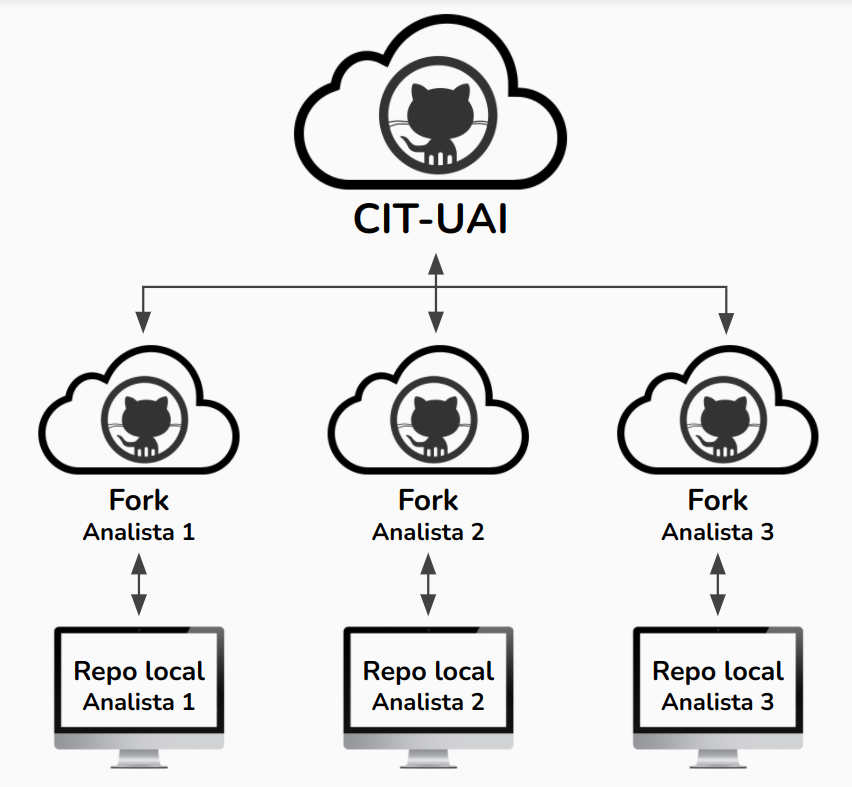

1.3 Uso Colaborativo
En esta sección veremos prácticas recomendadas para el trabajo colaborativo, usando GitHub
1.3.1 Forks
Anteriormente ya vimos como crear forks, pero es importante resaltar su utilidad.
Estos nos permiten tener una “copia” individual de un repositorio, en el cual podemos desarrollar partes del proyecto con cierta libertad. Todo esto, con el fin posterior de proponer, lo que hayamos desarrollado, al repositorio original.

En esta figura vemos la estructura recomendada para el flujo de trabajo. Para un proyecto, el repositorio principal se ubicará en el perfil de la organización (CIT-UAI), mientras que cada desarrollador tendrá su propio fork.
Se recomienda en el fork usar ramas. Por ejemplo si se desea implementar una nueva característica, llamar la rama con un nombre acorde a lo que se planea desarrollar (ej: new_functions). Luego, trabajar en ella y registrar varios commits con los avances, para luego, proponer los commits al repositorio principal (el de la organización) con una pull request.
Pull requests
GitHub (y otras plataformas similares) nos permiten hacer pull requests. Estas consisten en proponer una serie de commits a un repositorio principal. La ventaja es que permite a los desarrolladores observar cada cambio, comentar cada detalle, y evaluar si se añaden los commits al repositorio principal.
Plot title.
En esta figura se muestra un ejemplo de como se crea una pull request. Vemos como se compara el repositorio que pertenece al perfil CIT-UAI con el que pertenece a la cuenta personal (fork). De igual forma notamos que se está comparando la rama main del repositorio principal, con la rama dev del fork.
Plot title.
Luego de crear la PR vemos cuantos commits de diferencia hay entre el repositorio principal y el fork personal. Si nos vamos a la pestaña Files Changed veremos todos los archivos modificados considerando todos los commits en que difieren los repositorios.